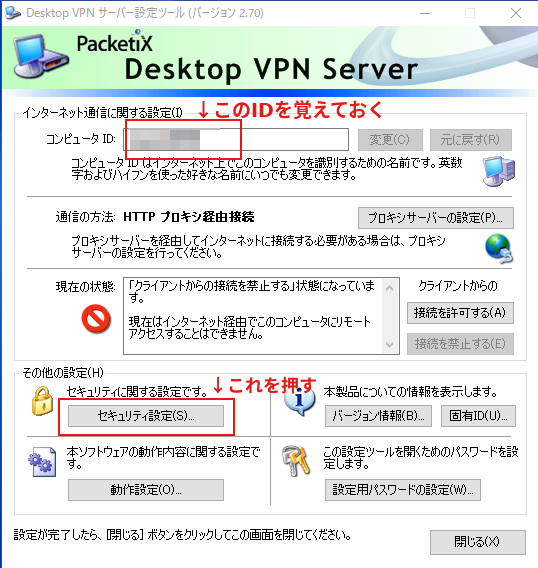
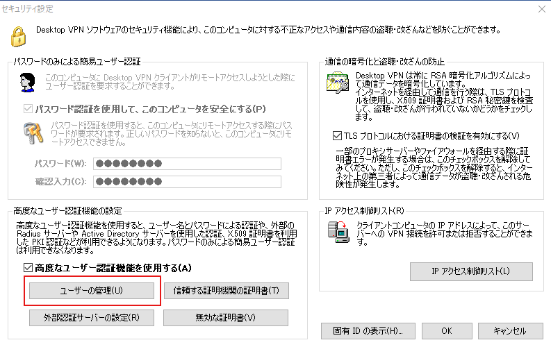
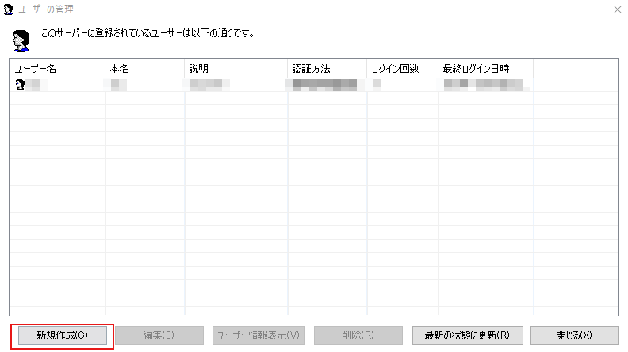
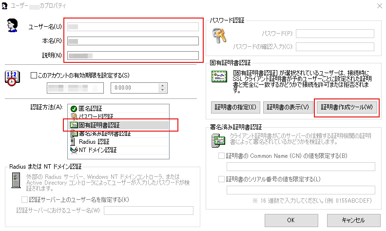

コロナコロナ言われている昨今、日に日に深刻になってきており、突然リモートワーク(テレワーク)強制！といわれても焦らないように…という趣旨です。
急に学校が休校になったりしてますし、万が一急に電車止まるとかあるかもしれないですしね。。。
リモートワークといっても自宅等、遠隔から会社PCを操作する…ということですが、それにはハードルが高かったり、ネットワーク管理者にいちいち言わないといけないとか、やれポートXX番を開いてマスカレードして…などあると思います。
そしてそういうポートを開いたりするには情報システム部門に説明しなきゃいけないとか結構面倒な手続きも必要だとは思います。そして大抵の場合は嫌がります。。。
もしかしたら小企業だとそういった知識を持ってない人が管理しているやもしれません。。。(あるいは外部へ丸投げという形も。。。)
ということで、「DesktopVPN」というのを使うとその辺の心配をしなくても割と簡単に実現できますし、軽く評価してみたので、「これは知らない人でも行けそうだな」と思ったので、レポートがてらまとめました。
そもそもDesktop VPNとは？、その仕組みは？
早い話が会社にある自分のPCを自宅のPCで操作可能なツールです。Windowsならリモートデスクトップとか各種VNCとかありますがあの類になります。
HPはこちらです。
https://www.desktopvpn.net/
本来は一か月間のみ無料で、以後有料ですが、新型コロナウィルスの影響で、4月30日まで無料開放ということです。
(以前は3.11の際も同じような対応をされていました)
https://www.softether.jp/7-news/2020.02.21
本来、外向けにリモートデスクトップを有効にする場合は、会社のファイアウォールにIPマスカレイドなどの処理とポートを開くという処理が必要で、しかも通信は暗号化しておかないと盗聴されるのでは…という懸念いっぱいなのですが…DesktopVPNはその辺の余計な設定をしなくても(割と)使えるというところが大きいですね。
この状況を図示してみると次のようになります。
これは、何も考えずに、会社にある自分のPC(192.168.1.55)でリモートデスクトップを有効にしたというものです。
普通の会社ですと、インターネットと会社の自PCの間にファイアウォールが挟まってます。
これは情報漏洩なんかを防いだり各会社でいろいろやっていると思います。
で、家にある自宅PCからインターネット経由で接続する場合、外側からは200.10.20.1(会社のIPアドレス)に接続しないといけないわけですが、ファイアウォールに何も設定がされていないと「この通信は誰宛てか」というのがわからないので捨てられます。
さらに言うと、普段は3389なんてポート番号はファイアウォールのほうで閉めている(セキュリティの関係)ので、弾かれることもあるかと思います。
要するに
「ファイアウォールに対して3389番へのアクセスは192.168.1.55さん宛てというルールを追加」
する必要があるわけですが、それは当然セキュリティ的にちょっと問題になりますし、普通はそういうルール追加をネットワーク管理者は嫌がります。
もう一つの懸念材料として、これらの間の暗号化はされていない、もしくは暗号化の強度が弱いことが多い(VNCやリモートデスクトップの種類によりますが)です。。
ということで、どうにもならないというかいろいろと面倒すぎるのですが、これをどうにかしようとしたのが「DesktopVPN」で、DesktopVPNを入れるとこうなります。
※DesktopVPNのホームページには詳しい仕組みが書かれていなかったので、おそらくこうなっているんだろうなあという推測です。
まず、会社PCに「DesktopVPN サーバ」を入れておいて設定します。
サーバといっても大したアプリではなくて、普通に起動して設定するだけでOKです。
すると①の通信でDesktopVPNの中継サーバ(201.66.55.44)に接続をします。
ポート番号443、つまりHTTPSでの接続(ブラウザで鍵が付いているような接続)で、この接続はファイアウォールでも余程ガチガチに設定されてない限りは通過できます。
ファイアウォールと会社PCの間に「プロクシ」が入っていても問題ないです。
※これが通過できないということは…つまり会社PCから各種ホームページが見れない状況に近いです
DesktopVPN中継サーバには、「200.10.20.1のPC名TESTPC-001がスタンバイ状態」ということになりずっと待ち受けみたいな感じになります。(たぶんこの間接続されたままになっています)
そして、家に帰って、自宅PCで「DesktopVPN クライアント」を入れておいて、「PC名TESTPC-001」を接続しに行きます。
すると、②に示した通り、DesktopVPN中継サーバに接続しに行き、そこからスタンバイ状態で待っているPC名TESTPC-001を探して、お互いマッチング成立ということになります。
そのあとは、中継サーバ経由でやり取り可能という話になります。
なお、通信はすべて暗号化してあります。HPにはRSA1024で暗号化と書かれているので割と強力な暗号化がしてあります。
自宅PCと会社PC間で暗号化されているので、盗聴されたとしても中身の解読は極めて困難です。
また、中継サーバが中身の通信を解読するなんてのも極めて困難です。
※通常のSSL通信のように鍵交換はRSAで通信内容はAES暗号だとは思います
インストール・設定方法
非常に簡単ですが、何点か注意があるのでそれだけ書きます。
まずはインストールしないと始まらないので以下からダウンロードしてインストールしましょう。
https://www.desktopvpn.net/download/
会社に置いているPCにDesktopVPN サーバを入れます。
ハードディスク等共有機能有効・無効版ありますが、有効版を入れておいて、設定で無効にすることはできます。
プログラム的に完全に無効にしないと気持ちが悪い！って人は無効版でいいと思います。
(しかし無効版だとできることは限られてきます。その辺はセキュリティをどの辺まで持ってくるべきかですね…)
自宅のノートPC等にはサーバ機能は必要ないので、「Desktop VPN 実行ファイル形式クライアント」だけを入れましょう。
インストール自体はここに書いてある通りでほとんどです。
https://www.desktopvpn.net/support/install/
サーバの設定方法は
https://www.desktopvpn.net/support/connect/
にありますが、何点か付けたしたほうがいい内容がありますので、以下に説明します。
まずこれです。
「コンピュータID」は自宅PCからの接続時に必ず必要なので、どこか自分がわかるところにメモしておきましょう。(他人に公開はなるべくしないように…)
次に会社PCでプロクシ経由でホームページを見ている…という場合は、HTTPプロキシサーバの設定が必要ですが、これはDesktopVPNサーバがPCの設定を使うのでよほどのことがない限りそのままでOKです。
次に「セキュリティの設定」を押します。

おそらくDesktopVPNサーバの最初の起動時にパスワードを設定しましょうという画面が出て設定したと思いますが、パスワードだけでは心もとないので、自分のこのDesktopVPN専用の鍵ファイル(証明書)を作成して、それを使って接続できたほうが無難です。
これからはその説明をします。
ということで、ユーザの管理を押します。
ここは新規作成です。(自分の環境なのですでにユーザが居ますが気にしないでください)

ユーザ名などを入れます。
認証方法は「固有証明書認証」を選択します。
DesktopVPNは自己証明書を発行でき、それを鍵として使用できるので、「固有証明書認証」で、証明書作成ツールを押します。
ここは「ルート証明書(自己署名証明書)」を選択します。
自己署名証明書とは、このDesktopVPNが証明した証明書(つまりオレオレ証明書)です。
もし、ちゃんとした認証局が発行した証明書がある場合は「ほかの証明書によって署名された証明書」を選択しても良いですね。
そして必要事項を埋めていきます。
CNやOなどは適当なアルファベットでOKです。
シリアル番号は1でも2でも良いですが、もし他に自己証明書がある場合は番号を被らないようにしてください。
最後にこの証明書を使うときのパスワードを設定するかどうか聞いてきます。
設定しておいたほうが無難です。設定しましょう。
そしてOKを押すと、保存画面が出てきますので、わかりやすい名前を付けて保存します。
拡張子は.p12です。
これはなくすとまた発行しないといけなくなるので、なくさないようにしてください。
そして、この「なんらた.p12」ファイルを何らかの方法で持ち帰ってください。
自宅PCには「Desktop VPN 実行ファイル形式クライアント」をインストールします。
https://www.desktopvpn.net/support/connect/
にある「DesktopVPNクライアントの事前設定」の通りすればOKですが、接続先コンピュータIDを入れた後の認証画面で、証明書認証するかどうかの選択があるので、証明書認証を押して、証明書に「なんらた.p12」ファイルを指定してあげればOKです。
その他注意事項など…
その他、気をつけておくべきことなどをまとめました。
システムモードとユーザモードどちらが良いか
自分はユーザモードしか試していません。(試したサーバの環境がWin10 Homeなため)
Windowsのリモートデスクトップ機能が有効なエディションだと、システムモードを選択可能です。
システムモードはWindowsのリモートデスクトップ機能を内部的に利用するようです。
ユーザモードは、DesktopVPNの独自機能だけで実現するモードのようです。なので、システム的な操作は厳しいものがあります。(あくまでシステムではなく、一つのアプリケーションとみなされるので、権限等の問題)
よって、ユーザモードの場合は、クライアントで操作するとそのままサーバにも反映されるようですね。
https://www.desktopvpn.net/faq/faq_f04_08.aspx
ユーザモードでは、UACは無効に
UAC(管理者権限が伴う操作)は無効にするか、リモート(自宅PCで遠隔操作している間)ではしないように気を付けましょう。
例えばソフトウェアのインストールなどが該当すると思います。
自宅PCからリモートで接続している時に、リモート先のPC(会社のPC)がUACの画面になると、UACの確認画面に切り替わってしまい以後操作できなくなるためです。
※ユーザモードの場合、UACのあの画面はWindowsによって物理的にPCを操作している人以外は操作が一切禁止となるためです
サーバはスタンバイや休止状態にならないようにしましょう
DesktopVPNサーバをインストールして起動中はスタンバイや休止状態にならないようになっていますが念のため。
休止状態になると接続が切れてしまい、クライアントと接続できなくなるので注意。
Windowsのバージョンは
Vista等結構古くても対応していますね。
https://www.desktopvpn.net/support/action/
画面更新速度は遅いですか？
さすがに中継を挟んでるので多少のもたつきはあると思います。
とはいえ元々リモート接続でGUIはそういうものだったりしますので、画面の早い更新が必要な用途にはちょっと向いてないかも…ですね。
Wineでも動く？
とりあえずUbuntu18.04で、DesktopVPNクライアントだけを試しましたが、動きました。